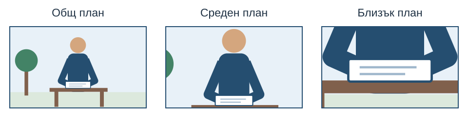

За какво е този урок?
Ще заснемете общ, среден и близък план, статична камера с действие и едно плавно движение на камерата.
Четете обясненията, изпробвайте действията и запазвайте работата си. Отворените въпроси показват примерен отговор след предаване. При собствена тема са възможни различни обосновани решения.
Предназначение, ориентация и планове
Първо решете къде ще се гледа видеото
Поредицата свързва заснемане на снимки, светлина, подбор, подготовка за уеб, видеозаснемане, сценарий и монтаж. Използвайте достъпен предмет или клубна дейност. Пазете оригиналите и работните проекти в своя папка; в мисията предавайте точно посочения резултат. Ако започвате оттук, заснемете нужните кадри за избраната тема — не е необходим чужд готов проект.
Снимката показва един момент, а видеото представя действие във времето. За сайта на клуба можете да покажете подреждане на изложба, работа по предмет или подготовка за събитие.
Изберете ориентацията предварително. Хоризонталното видео е удобно за широк плейър на страница. Вертикалното може да е подходящо за съдържание, предназначено за вертикален телефонен екран. Не завъртайте телефона по средата на един запис.
За упражнението изберете една ориентация за цялата серия, съобразена с проекта ви. Използвайте еднакви настройки за размер и честота на кадрите, когато устройството позволява. Например 1080p при 30 кадъра в секунда е възможен учебен избор; само високата резолюция не поправя разтърсен или неясен запис.
Общ, среден и близък план
В задачата снимачен кадър означава непрекъснато заснет откъс. Едрината на плана показва каква част от обекта и средата се вижда.
- Общ план: показва мястото, участника и връзката му с обкръжението.
- Среден план: насочва вниманието към участника и извършваното действие.
- Близък план: показва важен детайл — ръце, предмет, изражение или отделна част от действието.

Например общият план показва залата за изложбата, средният — участник, който подрежда снимки, а близкият — поставянето на надпис под една снимка.
Композиция и стабилна камера
Композиция през цялото действие
Проверявайте не само началния изглед, а и къде ще се движи обектът. Оставете достатъчно пространство в посоката на действието и не отрязвайте важната част в края на движението.
- Използвайте ясен основен обект и подходящ фон.
- Проверете хоризонта и разсейващите предмети.
- Не закривайте обектива с пръсти.
- Уверете се, че важната част остава на фокус.
- При нужда променете позицията спрямо светлината, вместо да оставяте обекта неразличим.
Приложете наблюденията от уроци 28–29. Сега трябва да ги проследите и по време на целия запис.
Как да получите стабилен кадър
Започнете със статична камера. Дръжте телефона с две ръце, с прибрани към тялото лакти, или използвайте подходяща стабилна опора. Ако разполагате със стойка, проверете подредбата, преди да започнете.
Не всяко действие изисква движение на камерата. Човекът или предметът може да се движи в стабилно подреден кадър. Това често е по-ясно от постоянно следене с резки корекции.
След стартиране оставете кратко спокойно начало. След края на действието задръжте още няколко секунди, преди да спрете. Така по-късно ще имате място за изрязване при монтаж.
Плавно движение с причина
Плавно движение с ясна причина
Панорамното движение завърта камерата наляво или надясно от сравнително постоянна позиция. Движението нагоре и надолу променя вертикалната посока. Използвайте ги, когато искате да разкриете информация или да проследите действие.
- Изберете началния и крайния кадър.
- Пробвайте движението преди записа.
- Започнете с кратко задържане.
- Движете се бавно и равномерно, без случайно връщане назад.
- Задръжте и крайния кадър, преди да спрете.
За тази задача не използвайте постоянно приближаване с цифрово увеличение. Сравнете го с промяна на позицията между два отделни записа. Ако движението затруднява гледането, повторете по-просто или снимайте статично.
Пет кратки записа
Практическа задача: пет кратки записа
Изберете проста дейност, например подреждане на фотография, отваряне на книга или изработване на детайл. За хората в кадър съобразете заснемането и бъдещото споделяне с тяхното съгласие.
- Заснемете общ, среден и близък план на дейността — три отделни записа от приблизително 8–12 секунди.
- Заснемете четвърти откъс със статична камера и движение на обекта.
- Заснемете пети с едно бавно хоризонтално или вертикално движение на камерата.
- Прегледайте всички записи на по-голям екран, ако е възможно. Потърсете разтърсване, неясен обект, неподходящ фон или загубен детайл.
- Повторете един проблемен запис и посочете какво сте променили.
За мисията ще предадете един представителен кратък клип; запазете цялата серия локално за планирането и монтажа. Запазете ясни имена, например 32-wide, 32-medium и 32-close, като оставите действителното разширение на видеото. Не е необходимо да монтирате откъсите в този урок.
Резултат: пет подбрани кратки записа и бележка за повторно заснетия. Ще ги използвате при следващите задачи по планиране и монтаж на видео.
Прочетете още
Nikon — основи на видеозаснемането; Nikon — стабилно видео (на английски). За композицията използвайте и урок 28.
Заснемете серия и предайте представителен откъс
- Изберете проста дейност с предмет. Определете предназначение и една ориентация за серията. Използвайте съгласувани настройки, например 1080p/30 fps, ако устройството ги предлага.
- Заснемете пет отделни откъса по около 8–12 секунди: общ, среден, близък план, статична камера с действие на обекта и едно плавно движение на камерата.
- Оставете спокойни начало и край в рамките на откъса. Прегледайте на по-голям екран и повторете един проблемен запис.
- Назовете петте подбрани файла 32-wide, 32-medium, 32-close, 32-static-action и 32-move с действителното разширение. Пазете всички за следващите уроци; не е нужно да ги монтирате сега.
- За предаване изберете един представителен откъс от серията, по който се вижда стабилността или планираното движение. Запазете копие с име 32-selected и действителното разширение (.mp4, .mov или друго поддържано от вашия плейър).
- Отворете го извън камерата, проверете цялото действие, ориентацията и размера. При нужда създайте MP4 копие по указанията по-долу. Оригиналите остават отделно.
Ако избраният кратък клип надвишава 20 MB, направете копие за преглед в Shotcut: Open File → клипа; Export, като From сочи отворения клип (Source), а не празна времева линия; изберете H.264/MP4. В Advanced → Video задайте пропорционален 720p вариант, без разтягане; ако полетата са неактивни, включете Resample; в Codec използвайте среден битрейт около 1.5–2 Mb/s (1500–2000 kb/s), ако е наличен. Запазете с ново име, изчакайте Jobs да завърши и прегледайте изнесения файл. Имената на настройките зависят от версията; проверете избрания източник, пропорциите и действителния размер. Не преименувайте MOV на MP4.
Самопроверка
Какво поправихте при повторния запис?
Пример: „В 32-move камерата се връщаше рязко назад. Избрах начален и краен кадър, пробвах движението и повторих с равномерна скорост. Сега предметът остава видим до края.“ Сравнете собствено наблюдение, действие и резултат, а не само обща оценка.
Три плана, три роли
При подреждане на изложба общият показва залата, средният — участника, който подрежда, а близкият — ръцете и поставянето на надпис. Други сцени са подходящи, ако разграничите контекст, действие и детайл.
Нужно ли е движение на камерата?
Движението на обекта вече представя действието. Стабилната камера пази ясна композиция и избягва случайни резки корекции. Използвайте движение на камерата, когато разкрива нужната информация, а не само за ефект.
Какво да запомним?
- Ориентацията следва мястото за показване.
- Общият, средният и близкият план имат различна роля.
- Композицията трябва да остава ясна през цялото действие.
- Статична камера може да показва движение на обекта.
- Оставяме спокойно начало и край за монтаж.